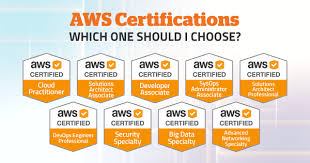

💻 Java Software Engineer | AWS Certified | Full Stack Developer
🚀 ☕ Java "A Result-Oriented Java Software Engineer developing scalable, secure, and high-performance applications that drive business success."
I'm Srisailam Pyata, a results-driven Java Software Engineer with over 4 years of experience in building scalable, secure, and high-performance applications. My expertise lies in Java, Spring Boot, Microservices, AWS, and DevOps, along with a strong foundation in system design, RESTful APIs, and cloud technologies.
I am passionate about crafting efficient backend architectures, optimizing system performance, and ensuring robust security. I have hands-on experience with Agile methodologies, CI/CD pipelines, Docker, and Kubernetes, and excel in dynamic, collaborative environments that foster innovation and efficiency.
If you're interested in learning more about backend development, cloud technologies, and system design, feel free to connect with me on LinkedIn where I share insights and industry knowledge.
I'm open to job opportunities where I can contribute, learn, and grow. If you have a role that matches my skills and experience, don't hesitate to contact me!
Technologies Used: Java, Spring Boot, Spring Cloud
Results: Increased system scalability and performance by 25%, resulting in 100% client satisfaction and a 20% improvement in client retention.
How Technology Helped: Spring Boot and Spring Cloud enabled rapid development and deployment of highly scalable and fault-tolerant microservices architecture, allowing the system to handle large volumes of user interactions seamlessly.
Integrations: Yangabet, Starbet, Exchange India, Raj Bet
Link to ProjectTechnologies Used: Spring Boot, PostgreSQL
Results: Streamlined player registration and authentication, improving platform operations by 25% and enhancing the overall player experience.
How Technology Helped: Spring Boot's rapid development capabilities and PostgreSQL's reliability ensured efficient management of player data and seamless authentication processes.
Integrations: Yangabet, Starbet, Exchange India, Raj Bet
Link to ProjectTechnologies Used: Java, Spring Boot, JPA, Spring JDBC, PostgreSQL, WebSockets
Results: Enhanced data accuracy by 15%, providing faster and more reliable data for live betting applications and achieving 99.9% fault tolerance in bet placement transactions.
How Technology Helped: The use of Spring Boot and JPA allowed for robust, scalable backend systems, while PostgreSQL and WebSockets facilitated real-time, reliable data exchange, ensuring smooth, fast, and fault-tolerant bet placements and sports stats updates.
Integrations: Yangabet, Starbet, Exchange India, Raj Bet
Link to ProjectDuration: August 2024 - November 2024
Duration: March 2018 - August 2022
Issued by: Amazon Web Services
Completion Date: March 2025
Certification ID: [Your Certification ID]
View Certification October 2023 – Expected April 2025
Belhaven University, Mississippi, USA
GPA: 4.0/4.0
August 2015 – May 2019
Jawaharlal Nehru Technological University, Telangana, India